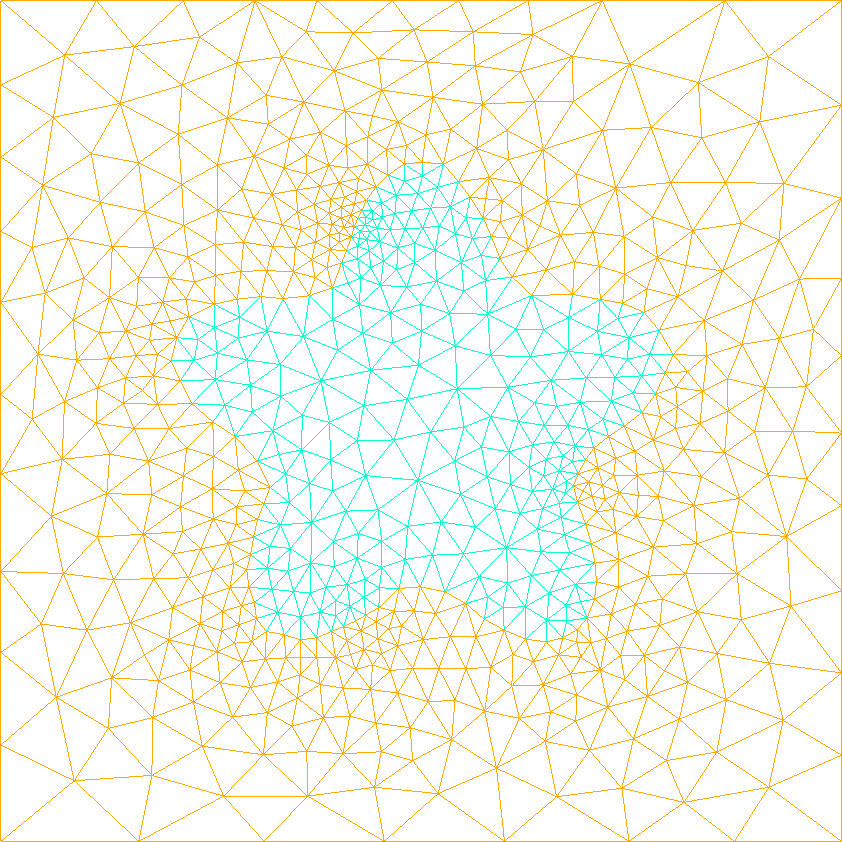
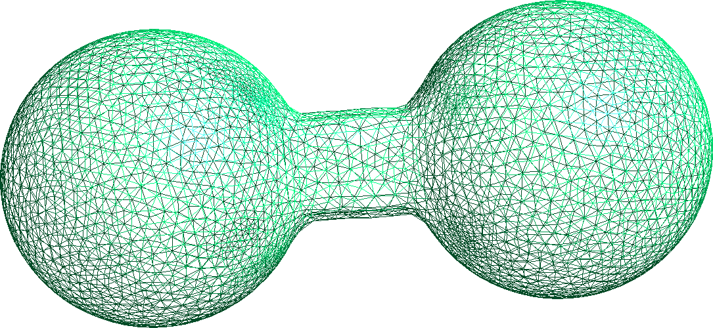

MMG extension
This extension provides functions to generate meshes of levelset functions using MMG. It define two methods: export_volume_mesh and export_surface_mesh. For both of them, it is possible to control the size of the generated mesh using the following optional parameters:
hgradcontrol the growth ratio between two adjacent edges.hminandhmaxcontrol the edge sizes to be (respectively) greater than thehminparameter and lower than thehmaxone.hausdcontrol the maximal distance between the piecewise linear representation of the boundary and the reconstructed ideal boundary.
Generation of 2D and 3D mesh from a level-set
For 2 and 3 dimensional Cartesian levelset, one can use the export_volume_mesh function to generate meshes. This method relies on the mmg2d_O3 and mmg3d_O3 utilities. Example in 2D:
using LevelSetMethods, MMG_jll
grid = CartesianGrid((-1, -1), (+1, +1), (50, 50))
ϕ = LevelSetMethods.star(grid)
LevelSetMethods.export_volume_mesh(ϕ, "Volume2D.mesh")
And similarly in 3D:
using LevelSetMethods, MMG_jll
grid = CartesianGrid((-1, -1, -1), (+1, +1, +1), (20, 20, 20))
ϕ = LevelSetMethods.sphere(grid)
LevelSetMethods.export_volume_mesh(ϕ, "Volume3D.mesh")
Generation of 3D surface mesh with MarchingCubes.jl
Using the mmgs_O3 utility, the MarchingCubes.jl library and the export_surface_mesh function it is possible to obtain a mesh of the levelset contour.
using LevelSetMethods, MMG_jll, MarchingCubes
grid = CartesianGrid((-2, -1, -1), (+2, +1, +1), (40, 20, 20))
ϕ = LevelSet(x -> 1.0, grid)
add_circle!(ϕ, [-1.0, 0.0, 0.0], 0.75)
add_circle!(ϕ, [+1.0, 0.0, 0.0], 0.75)
add_rectangle!(ϕ, [0.0, 0.0, 0.0], [2.0, 0.5, 0.5])
LevelSetMethods.export_surface_mesh(ϕ, "Surface3D.mesh"; hausd = 1.2, hmax = 1.0)